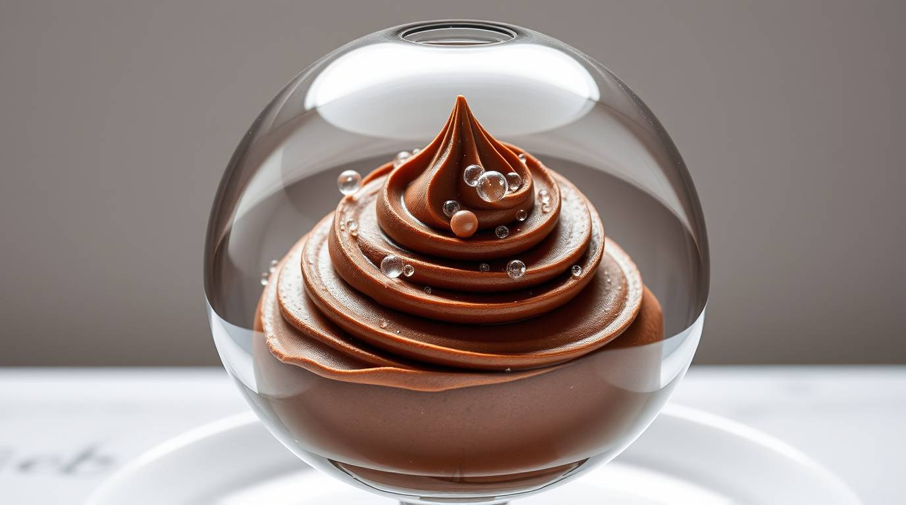
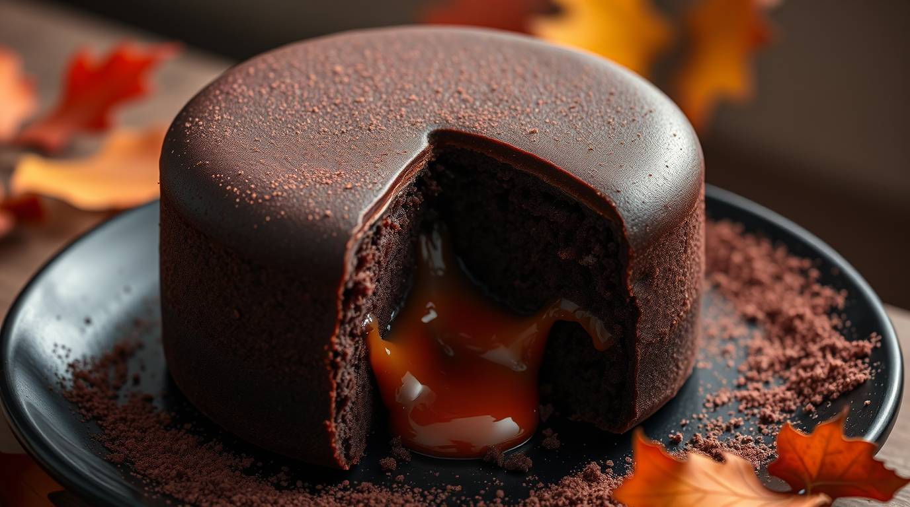
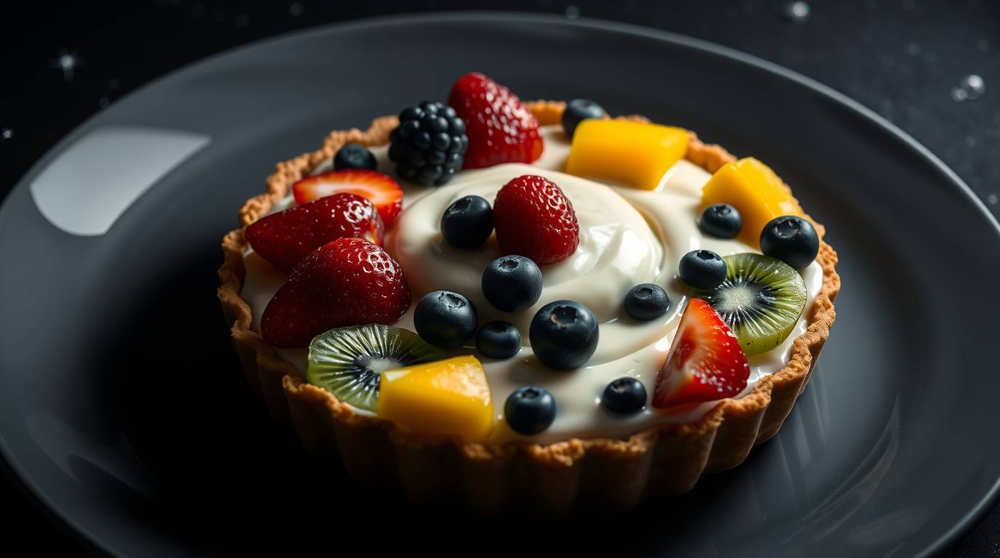

Sobremesas
Mousse de Bose
R$ 15,00
Mousse de chocolate com textura aerada e leveza de nível quase quântico. Uma sobremesa que celebra as descobertas sobre condensados de Bose-Einstein.
Fazer ReservaOutros pratos de Sobremesas

Buraco Doce de Hawking
R$ 16,90

Sorvete Pasteur
R$ 14,50

Torta Copérnica
R$ 17,90